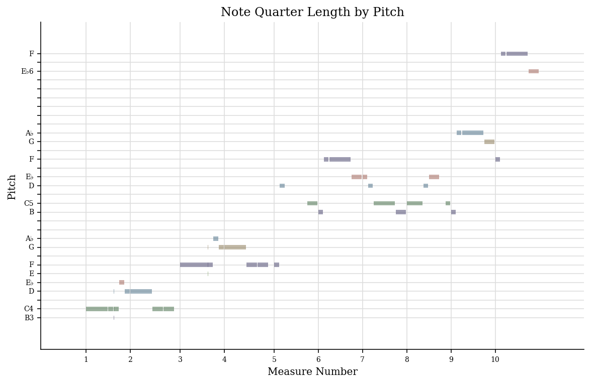
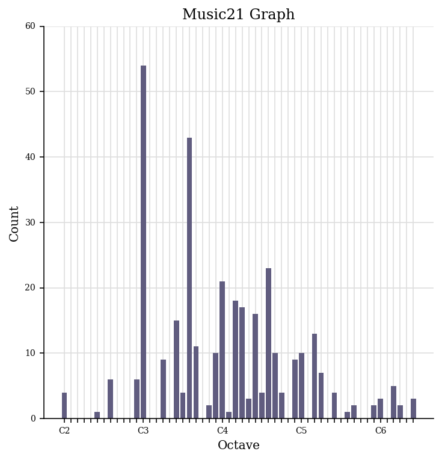

Computational Analysis of Notated Music
Week 4
Extract Features from MIDI
Generate a jSymbolic analysis of your piece, and select a group of features that you think is most interesting and relevant to your particular piece.
Download the csv here.
Analyse Feature Values
Generate a piano roll and pitch histogram of your piece using music21.
Generated Piano Roll:
Generated Pitch Histogram:
